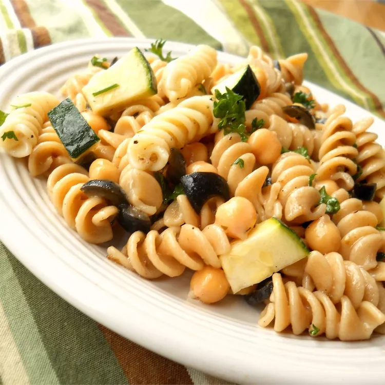

Home
Chickpea Pasta Salad

Description
A classic Italian pasta salad with chickpeas and olives.
Makes 6 servings
Prep time: 10-15 minutes
Cook time: 25 minutes
Ingredients
- 1 16oz package rotini pasta
- 1/2 cup chopped oil-cured olives
- 1 bunch green onions, chopped
- 1 15oz can garbanzo beans (chickpeas), drained and rinsed
- 2 tbsp fresh parsley
- 2 tbsp minced oregano
- 1/4 cup red wine vinegar
- salt and pepper
Steps
- Bring a large pot of salted water to a boil.
- Add pasta and cook until al dente, 9-12 minutes.
- Drain pasta and rinse under cold water. Set aside to cool.
- As pasta is cooking, heat olive oil in large pan or skillet over medium-low heat.
- Add olives, oregano, parsley, green onions, and chickpeas to pan. Reduce heat to low, cook for 20 minutes.
- Remove pan from heat, set aside to cool, 10-15 minutes.
- Add chickpea mixture and pasta to large bowl, toss.
- Stir in vinegar, season with salt and pepper.
- Cover and refrigerate, 8 hours to overnight.
- Add more vinegar, olive oil, salt, and pepper as desired. Serve.